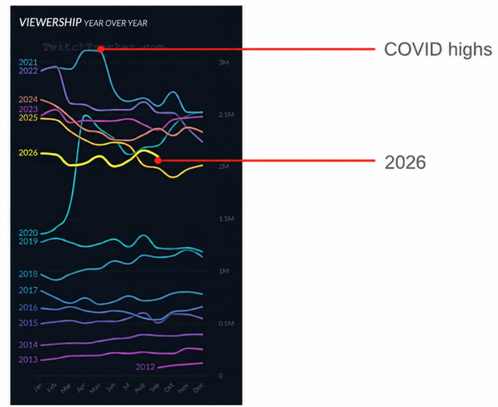

Streaming as a Medium for content
Why Twitch has the potential to be the most important, durable, and relevant social platform
As someone who spent a considerable amount of time watching Overwatch on Twitch during high school math class, it pains me to see live streaming platforms fail to understand their core product offering and descend into obscurity.

Twitch viewership declining from COVID peaks
I want to outline why I think livestreaming platforms are important, their current failures, and how to improve them. I will cover the first point in this post.
This post highlights why livestreaming has the potential to be the most important, durable, and relevant social platform.
1. Live streaming is the best medium for displaying an authentic personality.
Businesses are APIs around a scarce resource. Meta is a wrapper around social connection, Amazon is a wrapper around convenient shopping, and OpenAI is a wrapper around intelligence.
Content creators are a type of business. However, the “scarce resource” they provide is much more abstract. It's usually a bundle of their personality + an underlying scarce resource.
Casey Neistat is NYC lifestyle + his personality. MrBeast is hyperbolic experiments + his personality. MKBHD is tech products + his personality. You, humble viewer, cannot experience the NYC lifestyle / hyperbolic experiments / tech products, so you access the resource by watching the creators instead.
Some creators are more personality-based (Emma Chamberlain), while others are more scarce-resource-based (MrBeast). Viewers stick with creators either because they have an outlier personality or provide access to a desirable resource. Usually it's a varying combination of both.
The best creators realize that the personality part of their bundle is their true edge since it’s not fungible and allows for true differentiation.
Livestreaming is important because it is a platform where creators are forced to display their personality rather than revolve their whole brand around a scarce resource. This is because streams are long (5hrs+) and happen in real time, allowing for a nuanced personality to shine through. On-demand video platforms like reels/tiktok/netflix/youtube make it harder to convey the nuance of one's personality since viewership is very fleeting and resembles a series of short dopamine hits.
2. Why personality-based content will last and grow in the future
The previous point established that a creator is basically their personality + a scarce resource.
In the past, there was a lot of low hanging fruit when it came to scarce resources (travel, food reviews, music reviews, lifestyle). Now that the easy-to-access subjects are gone due to oversaturation, all that's left are resources with high barriers to entry (think Mr Beast scale challenges).
AI as a whole also devalues the importance of the scarce resource because you can generate and distribute crazy clips with very little input cost. It’s way easier to generate a clip of a crazy explosion, but harder to generate a consistent personality across many platforms and accounts.
This shift will force most creators to start investing in how they display their personality to their audience. I’ve explained in the previous point why livestreaming is set up to capture this tailwind.
3. Live streaming is aligned with creator incentives
Your success as a creator is determined by how many right tail bets you hit + how much value you can capture from each bet. Since posting content generally has unlimited upside and limited downside, a creator’s optimal strategy is:
1) take a bunch of experimental bets
2) capture value from successful bets for a period of time
3) repeat.
Most “successful” creators stop after step 2.
Pre-recorded content makes it harder for established creators to take right tail risks. Creators find themselves in a local maximum when they have to post pre-recorded content on a regular basis. This is because their audience expects a consistent type of content at a predefined interval. If a creator wants to take a risk by posting experimental content at an intermittent pace, they risk losing their existing core audience. This is what makes most creators fall off after finding an audience.
Live streaming inverts this dynamic. When your content is very long-form and personality -based, the ideal viewer isn't tuning in for consistent dopamine hits. They tune in to enjoy the authentic personality of the streamer over long periods of time. The creator does not need to constantly perform in front of their audience, allowing them to focus on taking larger bets.
This is basically an example of the barbell strategy, but for creators. You don't have to pump out 7/10 level content artifacts every week. Instead, live stream content that is 2/10 in terms of engagement but shows your personality and pour the rest of your energy into concentrated 10/10 bets.
Live streaming is a content medium that has a lot of potential. However, the ecosystem around it is full of various inefficiencies. I will outline these failures + ideas to incentivize growth in future posts.
Inspired by: